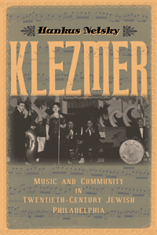

<body bgcolor="#FFFFFF" text="#000000" link="#0000FF" vlink="#CC0000" alink="#CC0000"><center><hr width="350" size="1" align="center" noshade>The story of Philadelphia Jewish life through the music of klezmer<hr width="350" size="1" align="center" noshade><p><a href="https://cdcshoppingcart.uchicago.edu/Cart/ChicagoBook.aspx?ISBN=9781439909034&&PRESS=temple" target="_top">Buy this book!</a> | <a href="https://cdcshoppingcart.uchicago.edu/Cart/Cart.aspx?PRESS=temple" target="_top">View Cart</a> | <a href="https://cdcshoppingcart.uchicago.edu/Cart/Cart.aspx?PRESS=temple" target="_top">Check Out</a></p><p></p></center><!--none//--><h1>Klezmer</h1>
<H2>Music and Community in Twentieth-Century Jewish Philadelphia</H2>
<h3>Hankus Netsky</h3>
<P>cloth 1-4399-0903-2 $64.50, Jun 15, <FONT COLOR=#990033>Available</FONT>
<br>Electronic Book 1-4399-0905-9 $64.50 <FONT COLOR=#990033>Available</FONT>
<BR> 198 pp
6x9
1&nbsp;table 50&nbsp;figures
</P><BLOCKQUOTE><I>"</I>Klezmer<I> breaks new ground by providing a localized musical portrait of a klezmer community outside the New York area. Netsky makes significant efforts by combining detailed and wide-ranging interviews, personal narrative, and scholarly analysis. His experience with and access to the Philadelphia klezmer scene is unparalleled; his substantial long-term research, including interviews with many klezmorim who have since passed away, is clearly a treasure. </I>Klezmer<I> provides a fascinating, satisfying, and deeply textured picture of a community and its musicians through years of transition."</i> <br>&#151<b>Judah M. Cohen</b>, Lou & Sybil Mervis Professor in the Study of Jewish Culture at Indiana University, and author of <i>The Making of a Reform Jewish Cantor: Musical Authority, Cultural Investment</i></I></BLOCKQUOTE>
<P><I>Klezmer</I> presents a lively and detailed overview of the folk musical tradition as practiced in Philadelphia's twentieth-century Jewish community. Through interviews, archival research, and recordings, Hankus Netsky constructs an ethnographic portrait of Philadelphia�s Jewish musicians, the environment they worked in, and the repertoire they performed at local Jewish lifestyle and communal celebrations.
<P>Netsky defines what klezmer music is, how it helped define Jewish immigrant culture in Philadelphia, and how its current revival has changed klezmer�s meaning historically. <I>Klezmer</I> also addresses the place of musicians and celebratory music in Jewish society, the nature of klezmer culture, the tensions between sacred and secular in Jewish music, and the development of Philadelphia's distinctive �Russian Sher� medley, a unique and masterfully crafted composition.
<P>Including a significant amount of musical transcriptions, <I>Klezmer</I> chronicles this special musical genre from its heyday in the immigrant era, through the mid-century period of its decline through its revitalization from the 1980s to today.
<BR>&nbsp;<h2>Excerpt</h2><P>Excerpt available at <a href="http://www.temple.edu/tempress">www.temple.edu/tempress</a></p>
<BR>&nbsp;<h2>Reviews</h2>
<p><i>"Hankus Netsky masterminded the mainstreaming of klezmer music into late twentieth-century American culture. Now, he trains a historical eye on this much-discussed, little-studied Jewish musical tradition. The result is a landmark examination of how music and dance interact in the context of Jewish communal celebrations from the immigrant era onwards. This rich, multi-generational narrative will enthrall aficionados and scholars alike."</i> <br>&#151<b>James Loeffler</b>, Associate Professor of History at the University of Virginia and author of <i>The Most Musical Nation: Jews and Culture in the Late Russian Empire</i>
<p><i>"'Jewish music' is, for many, Irving Berlin or Debbie Friedman, George Gershwin or Leonard Bernstein. Musician, scholar and historian Hankus Netsky broadens this perspective by sharing the rich and fascinating story of a unique genre of Jewish folk music, klezmer, in a particular Jewish community, Philadelphia. He makes the case that this music is more than entertainment or contemporary popular culture; it is the door to understanding a community�s history, ethnic identity and sociology.... But Netsky does so much more: he writes an historical and musical love letter to his family as viewed through the lens of his and their personal stories, overlaid with socioeconomic studies of Jewish culture and musicology. With personal reminiscences, interviews, and just a bit of family gossip, Netsky creates a compelling and fascinating web of 'meises' mixed with scholarship, seen through the colorful recollections and memories of his uncles, their friends and cronies, his bandmates and, ultimately, his musical colleagues and historians.... a fascinating and vibrant welcome into the world of klezmer."</i><br>&#151<b><i>American Jewish History</i></b>
<BR>&nbsp;<h2>Contents</h2><P>
<p>Acknowledgments
<br>Introduction
<p><b>Part I: The Klezmer Musician</b>
<br>1. The Klezmer Mystique
<br>2. Klezmer Musicians in Jewish Philadelphia, 1900�1945
<br>3. Philadelphia�s Klezmer Tradition: The Later Years
<p><b>Part II: Musical Traditions</b>
<br>4. Klezmer at Philadelphia�s Jewish Weddings
<br>5. The Evolution of Philadelphia�s Russian Sher Medley
<p>Epilogue
<br>Notes
<br>References
<br>Index
</P><BR>&nbsp;<H2>About the Author(s)</H2>
<P><b>Hankus Netsky</b> is Chair of Contemporary Improvisation and Director of the Jewish music ensemble at the New England Conservatory in Boston. He is also the Founder and Director of the Klezmer Conservatory Band, an internationally renowned Yiddish music ensemble. He has collaborated, performed, and recorded with many well-known artists, including Itzhak Perlman and Theodore Bikel.</P>
<BR><H2>Subject Categories</H2>
<p><A HREF="/tempress/jewish.html" TARGET="_top">Jewish Studies</a>
<BR><A HREF="/tempress/music.html" TARGET="_top">Music and Dance</a>
<BR><A HREF="/tempress/philly.html" TARGET="_top">Philadelphia Region</a>
</p>
<p align="center"><a href="https://cdcshoppingcart.uchicago.edu/Cart/ChicagoBook.aspx?ISBN=9781439909034&&PRESS=temple" target="_top">Buy this book!</a> | <a href="https://cdcshoppingcart.uchicago.edu/Cart/Cart.aspx?PRESS=temple" target="_top">View Cart</a> | <a href="https://cdcshoppingcart.uchicago.edu/Cart/Cart.aspx?PRESS=temple" target="_top">Check Out</a></p><p><font face="Arial" size="1"><a href="copyright.html" onMouseOver="window.status='Web Copyright Policy';return true;" onMouseOut="window.status=''" title="Web Copyright Policy">&copy;</a> 2016 <a href="http://www.temple.edu" target="new" onMouseOver="window.status='Link to Temple University home page';return true;" onMouseOut="window.status=''" title="Link to Temple University home page">Temple University</a>. All Rights Reserved. http://www.temple.edu/tempress/titles/1937_reg.html</font></p>